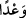

okunmuştur. Bu okuyuşta şehadetin dinde asîl ve yüce bir yerinin olduğuna dikkat
çekilmiş, mücâhidlerin Allah yolunda ölmeye aldırmadıklarını, bilakis Allah yolunda
ölmenin onlara sağ kalmaktan daha sevimli olduğu bildirilmiş olmaktadır. Hasan Basrî
bu okuyuş şeklini tercih etmiştir. Çünkü âyet bu şekilde okunduğu zaman canı satışa
arzetme daha yakın olmaktadır. Bir şeyi satan kimse sattığı şeyin bedelini teslim almaya,
ancak sattığı malı teslim etmekle hak kazanır.
(Şâir) Asma’î, Ca‘fer (r.a.) için şu şiiri söylemiştir:
Can karşılığında Allah ile alış veriş yapıyorum.
O canın bütün mahlukat içerisinde bir bedeli yoktur.
Cennet o can ile alınır. Canı cennetten başka bir şey karşılığında
Satarsam, bu büyük zarar ve zıyan demektir.
Canım, başıma gelen bir felaketten dolayı yok olur giderse,
O zaman dünya da, canın bedeli de yok olur gider.
Ebû Ali Kûfî ise şu şiiri söylemiştir:
Yüce Adn cennetinde, Tûbâ’nın gölgesinde
Binaları yüksek kubbeyi kim satın alır?
Onun aracısı Mustafa, Allah ise dilediği kimseye satıcısı,
Cibrîl de ona çağıran münâdîsidir.
Bilesin ki: Kim canını ve malını cenneti talep için feda ederse, onun için cennet
vardır. Bu, cihad-ı asgardır (küçük cihad). Kim de kalbini ve ruhunu Allah’ı talep
uğrunda feda ederse, ona da cennetin Sâhibi vardır. Bu da cihad-ı ekberdir (büyük
cihad). Çünkü tasfiye ve (kötü) ahlâkı değiştirme yolu, zâhir düşmanlarla savaşmaktan
daha zordur. Öldürme (katl) ya zâhir düşmanı öldürme şeklinde ya da bâtın düşman olan
nefis ve hevasını öldürme şeklinde olur.
“Bu, Allah’ın Tevrat’ta, İncil’de ve Kur’ân’da va‘dettiği” yâni Kur’ân’da
belirtildiği ve zikredildiği gibi Tevrat ve İncil’de de belirtilen ve zikredilen “gerçek”
Kâşifî’nin belirttiğine göre içinde hilaf bulunmayan sâbit ve ebedî “bir sözdür.” Yâni,
bu ümmetten Allah yolunda savaşanlara cennetin vaadedilmesi, Allah tarafından
indirilen kitaplarda zikredilmiştir. Âyet, Tevrat ve İncil ehlinin de Allah yolunda
cihadla me’mur olduklarını ve onlara da cennetin vaadedildiğini gösterir.
“ __WORD__ (sözdür)” kelimesi, Allah yolunda savaşın bedelinin âhirette olacağını te’kit
etmektedir Çünkü cennetin dünyada olması mümkün değildir.
Müfti Sa‘dî Çelebi demiştir ki: Âyetteki “Cennet kendilerinin olmak üzere Allah
onların canlarını ve mallarını satın almıştır” ifadesi, “Allah onlara cenneti kendi
yolunda cihad etmeleri şartıyla vaadetmiştir.” mânâsına gelmektedir.
“Kim Allah’tan daha çok sözünde durabilir?” Yani, hiç kimse söz ve vaadine, Allah